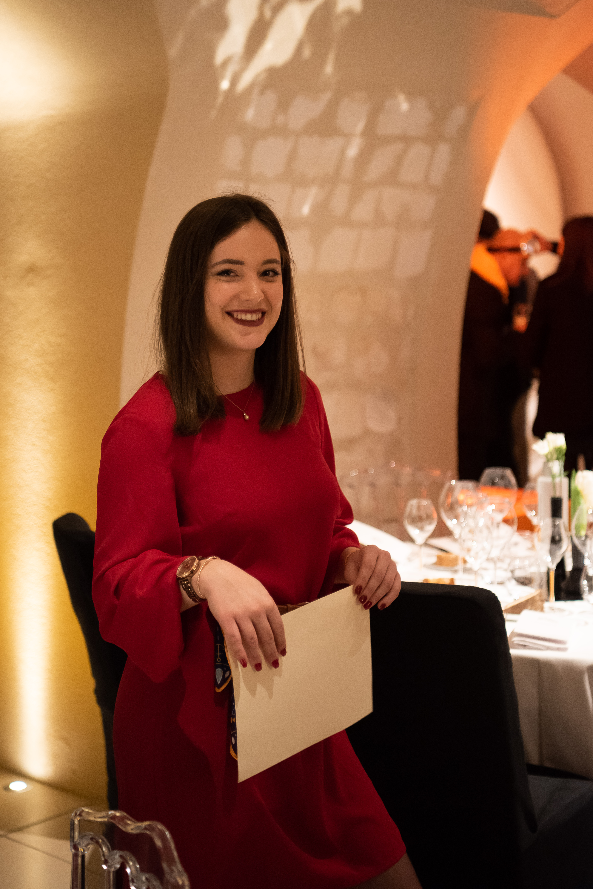
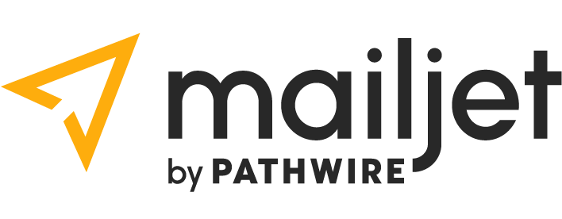
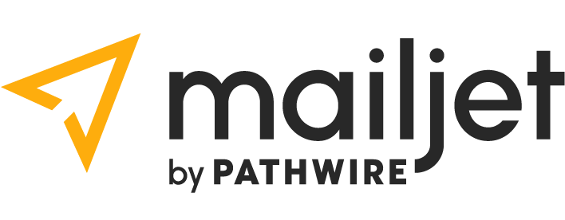
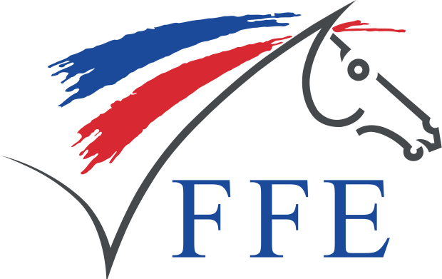

Chloé De Smet
Cheffe de produit
Je suis une entrepreneuse avec de l'expérience en gestion de tous les aspects relatifs à la création et au développement d'un produit.
Ajoutes-moi sur Linkedin !Formation Professionnelle
2016 :
Baccalauréat Économique et Social - Lycée André Malraux, Gaillon (27)
2020 :
Licence Économie Gestion parcours gestion - Université de Reims (51)
En cours :
PGE Master Digital Marketing & Innovation - Iéseg Businness School, Paris La Défense (92)
Expériences de travail
01/2021 - 08/2023 : Erisay Réceptions (27)
Responsable Marketing et Commerciale en Alternance
Gestion (stock, personnel, partenaires, calculs des coûts et prix)
Communication (usage suite adobe)
Digital (mise à jour site internet, analyse marketing)
Photographie
09/2020 - 03/2021 : Cagney Contract Cleaning (Dublin)
Responsable entretien
Voyage immersif
Gestion des stocks
Gestion de planning
Entretien des locaux de plusieurs domaines
01/2020 : Veuve Clicquot (51)
Stage chargé de projet évènementiel
Organisation d'évènements
Recherche de nouveaux prospects
Emailing
Création de visuels
Partenariats
2015 - 2019 : Erisay Réceptions (27)
Extras vacances/week-end
Service dans les évènements
Préparation des commandes
10/2016 - 04/2017 : Memphis Coffee (51)
CDI Etudiant Serveuse
Accueil Client
Mise en place
Service
Langues
Anglais (B2)
Espagnol (Notions)
Informations personnelles
Année de naissance :
1997
Téléphone :
06 50 70 03 77
E-mail :
desmet-c@hotmail.fr
Compétences Professionnelles
-

Suite adobe (InDesign, Illustrator, Photoshop, Acrobat, Lightroom, PremierePro)
-

Certification google analytics
-
Office 365
-

MailJet
-

Wordpress
-
Suite adobe (InDesign, Illustrator, Photoshop, Acrobat, Lightroom, PremierePro)
-
Certification google analytics
-
Office 365
-

MailJet
-
Wordpress
Centres d'intérêt 
Passionnée de sport et plus particulièrement d'équitation depuis l'enfance
Bénévolat pendant les concours : assistante au jury, ramasseuse de barre, aide à l'organisation, annonce des cavaliers à la porte, accueil des cavaliers au paddock